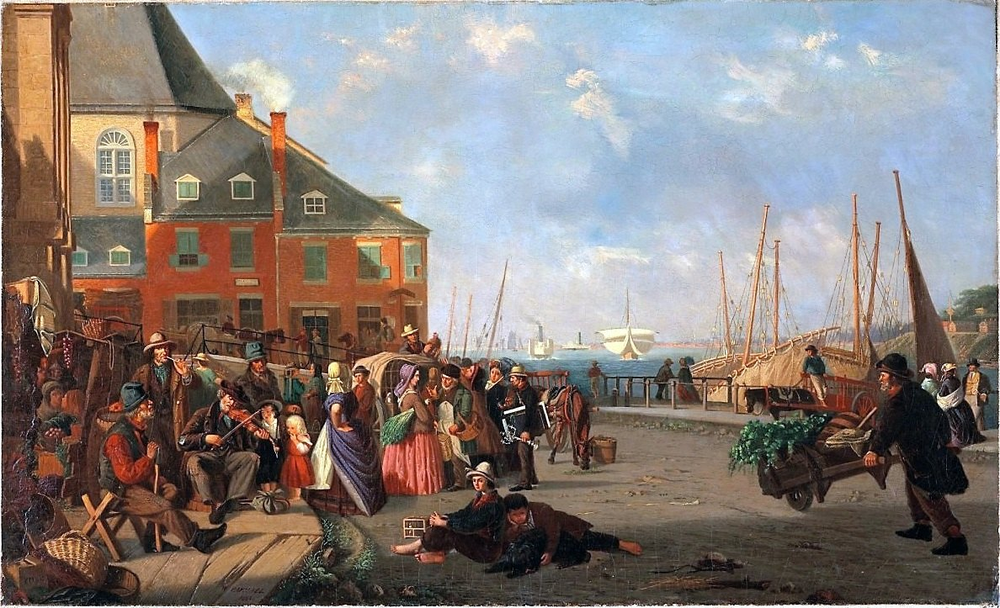

In Context
Listen, weigh, report
Agree what the Welcome Report should keep, and write your page of the report.
Who Gets In? Canada and the Promise of Welcome
Look for him first. In the middle of this busy Montreal market, a young man in a dark coat holds a portfolio under his arm and a silver candelabrum in his hand. He is the painter, William Raphael. He was born Israel Rafalsky in Nakel, in Prussia, in 1833, and he arrived in Montreal by train on 23 April 1857.
Nine years later he painted his own arrival and called the picture Immigrants at Montreal. The candelabrum was his family’s ritual object: he brought his past with him into his new country. Today the painting hangs in the National Gallery of Canada.
In this sequence you will meet other newcomers: Highlanders who lost their land, Black Loyalists who were promised land, farmers from Eastern Europe, Sikh passengers who were refused, war brides and refugees. Each time, ask two questions: what did Canada give them, and what did they give Canada?
The question of the sequence:
Has Canada kept its promise of welcome, and what have newcomers and their host country given each other?
How the sequence works
- Each lesson opens with a Recap and ends with Homework.
- Each lesson starts with a painting: describe it first, then use it as evidence.
- You will read laws, speeches, adverts, certificates and official figures, and compare them.
- Each lesson has Core tasks for everyone and Stretch tasks to go towards C1.
- Answers are hidden: open them only after you have tried.
The lessons
Highland Scotland in 1865 and Canada in 2021: why people leave, and why they choose Canada.S2 · Black Loyalists: A Promise of Land
Birchtown, broken promises, a petition to London and the voyage to Freetown in 1792.S3 · The Last Best West: Choosing Settlers
Clifford Sifton’s “stalwart peasant in a sheep-skin coat” and the settlement of the Prairies.S4 · Closed Doors: The Head Tax and the Komagata Maru
Laws that kept people out, and the apologies of 2006 and 2016.S5 · Pier 21: Gateway to Canada
Halifax, 1928 to 1971: nearly one million newcomers, war brides and refugees.S6 · “No Official Culture”: Multiculturalism
The points system of 1967 and Pierre Trudeau’s statement of 1971.S7 · Refugees and Today’s Debate
Private sponsorship, the Nansen Medal of 1986 and the Immigration Levels Plan.Final task
A bac-style written test on unseen documents, or a five-minute oral report: “Canada’s Welcome Report”.
Timeline
- 1783 · More than 3,500 Black Loyalists arrive in the Maritimes (S2)
- 1792 · 1,196 Black Nova Scotians sail from Halifax to Sierra Leone (S2)
- 1885 · The Chinese Immigration Act imposes a Head Tax of $50 (S4)
- 1896 to 1905 · Clifford Sifton, Minister of the Interior, recruits settlers for the Prairies (S3)
- 1914 · The Komagata Maru is refused in Vancouver (S4)
- 1923 to 1947 · Most Chinese immigrants are excluded (S4)
- 1928 to 1971 · Pier 21 in Halifax welcomes nearly one million newcomers (S5)
- 1967 · The points system (S6)
- 1971 · Multiculturalism within a bilingual framework (S6)
- 1986 · The Nansen Medal goes to the People of Canada (S7)
- 2006 and 2016 · Apologies for the Head Tax and the Komagata Maru (S4)
- 2021 · Immigrants are 23.0% of the population (S1)
Bulletin officiel n°22 du 29 mai 2025
Arrêté du 5 mai 2025, annexe 4 : programme d’anglais pour les classes de lycée général et technologique. Classe de première, repères culturels.
- Axe 1. Identités et échanges : « Quels bénéfices réciproques les terres d’accueil anglophones et leurs nouveaux arrivants ont-ils tirés des flux migratoires successifs ? Comment les identités se construisent-elles en dépit des frontières ou grâce à elles ? »
- Objet d’étude : « Migrations et politiques d’accueil : le cas du Canada ».
- Niveau visé en fin de première en LVA : B1+ (« consolidation du niveau B1 […] et son dépassement »). Cette séquence vise B2 et ouvre vers C1.
- Application en première à la rentrée 2026.